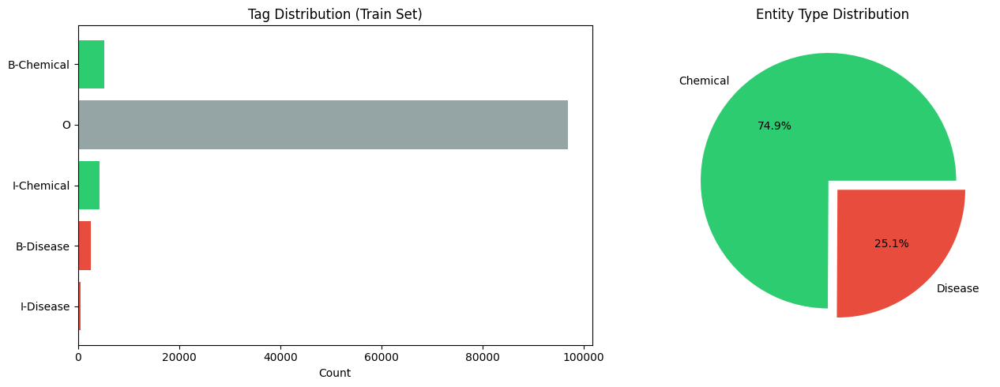
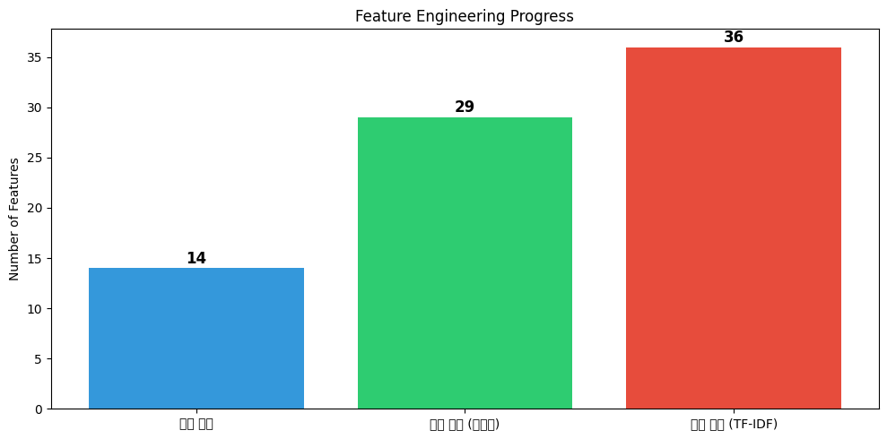
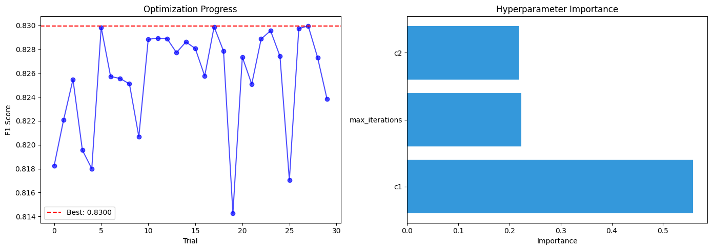
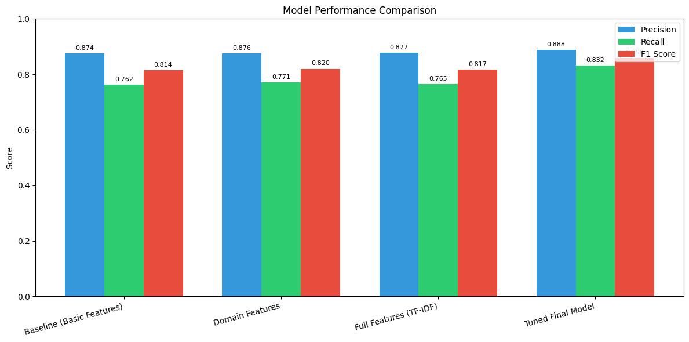
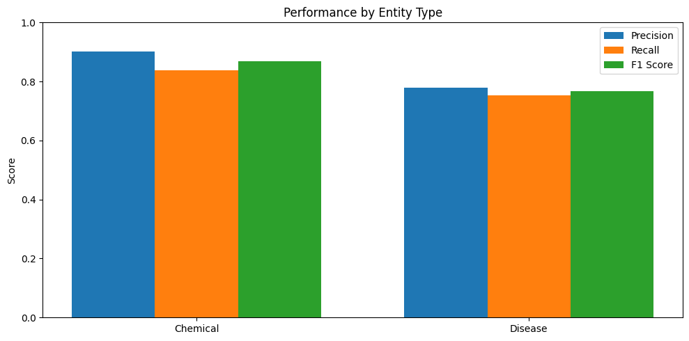
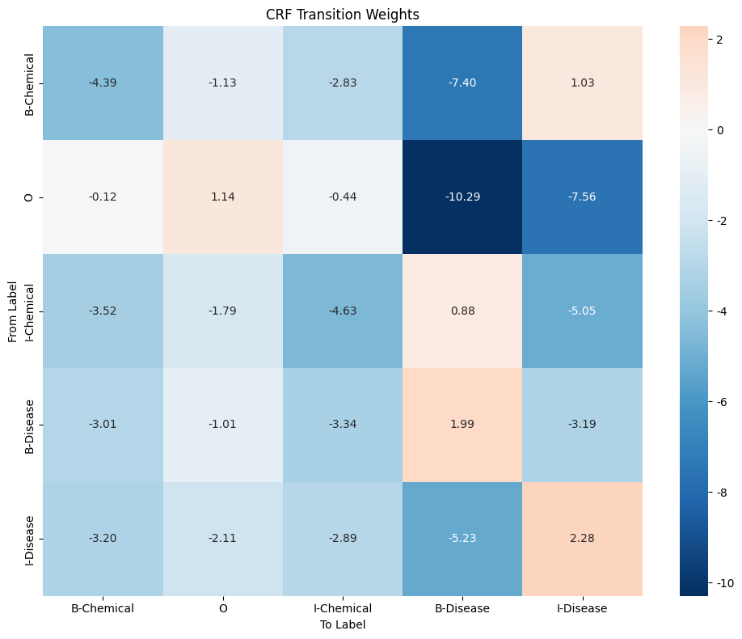
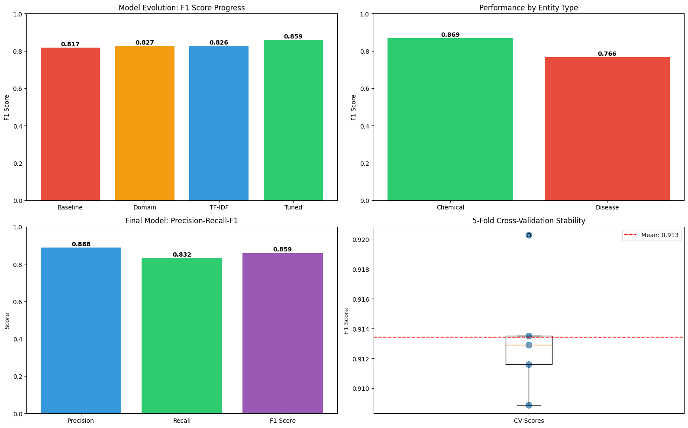

Code
# 필요한 패키지 설치 (Colab 환경)
!pip install -q sklearn-crfsuite seqeval datasets optuna이주현
November 24, 2025
본 워크북은 의료 텍스트에서 화학물질(Chemical)과 질병(Disease) 개체를 인식하는 Named Entity Recognition(NER) 시스템 구축을 포함합니다. 이론적 기반과 실무 문제 해결 능력을 동시에 강화할 수 있도록 설계되었습니다. 분석가는 BIO 태깅 체계의 이해, TF-IDF 기반 특징 추출, CRF 모델의 시퀀스 레이블링 원리를 고려해야 합니다.
진행률: 0% (분석 시작) 🔄 활용도: 학부 4학년 전공 실습
이 워크북을 통해 학습자는 다음을 실습하게 됩니다:
| 단계 | 주요 작업 내용 | 주요 도구/스킬 | 결과물 |
|---|---|---|---|
| 1단계 | 데이터 로드 및 탐색 | requests, pandas | BIO 태깅 데이터 이해 |
| 2단계 | 전처리 및 특징 추출 | sklearn TF-IDF | 토큰별 특징 벡터 |
| 3단계 | CRF 모델링 | sklearn-crfsuite, Optuna | 튜닝된 NER 모델 |
| 4단계 | 성능 평가 | seqeval | Entity-level F1 |
| 5단계 | 모델 해석 | CRF weights 분석 | 중요 특징 파악 |
| 6단계 | 외부 검증 | 홀드아웃 테스트셋 | 일반화 성능 |
| 7단계 | 결과 리포트 | Matplotlib | 종합 분석 보고서 |
이 워크북은 다음 기술/개념을 선행 학습한 학습자를 대상으로 합니다:
📌 데이터셋: BC5CDR (BioCreative V CDR) Corpus 📌 출처: https://biocreative.bioinformatics.udel.edu/tasks/biocreative-v/track-3-cdr/ 📌 배경: 1,500개의 PubMed 논문 초록에서 추출한 화학물질-질병 관계 데이터로, NER 및 관계 추출 연구에 널리 사용됩니다.
| 변수명 | 설명 |
|---|---|
| Token | 개별 단어 또는 토큰 |
| POS | 품사 태그 (Part-of-Speech) |
| Tag | BIO 태그 (B-Chemical, I-Chemical, B-Disease, I-Disease, O) |
# 기본 라이브러리
import numpy as np
import pandas as pd
import warnings
warnings.filterwarnings('ignore')
# 데이터 로드
from datasets import load_dataset
# 텍스트 처리 및 특징 추출
from sklearn.feature_extraction.text import TfidfVectorizer
from collections import Counter
import re
# CRF 모델링
import sklearn_crfsuite
from sklearn_crfsuite import metrics as crf_metrics
# 평가
from seqeval.metrics import classification_report, f1_score, precision_score, recall_score
from seqeval.scheme import IOB2
# 하이퍼파라미터 튜닝
from sklearn.model_selection import cross_val_predict
import optuna
from optuna.samplers import TPESampler
# 시각화
import matplotlib.pyplot as plt
import seaborn as sns
# 한글 폰트 설정 (Colab)
plt.rcParams['font.family'] = 'DejaVu Sans'
plt.rcParams['axes.unicode_minus'] = False
print("✅ 모든 라이브러리가 성공적으로 로드되었습니다.")✅ 모든 라이브러리가 성공적으로 로드되었습니다.BC5CDR 데이터셋을 Hugging Face Hub에서 로드합니다. 이 데이터셋은 PubMed 논문 초록에서 추출한 화학물질(Chemical)과 질병(Disease) 개체가 BIO 형식으로 태깅되어 있습니다.
# BC5CDR 데이터셋 로드
!mkdir -p data/bc5cdr
!wget https://huggingface.co/datasets/tner/bc5cdr/resolve/main/dataset/train.json -O data/bc5cdr/train.json
!wget https://huggingface.co/datasets/tner/bc5cdr/resolve/main/dataset/valid.json -O data/bc5cdr/valid.json
!wget https://huggingface.co/datasets/tner/bc5cdr/resolve/main/dataset/test.json -O data/bc5cdr/test.json
!wget https://huggingface.co/datasets/tner/bc5cdr/resolve/main/dataset/label.json -O data/bc5cdr/label.json
from datasets import load_dataset
import json
dataset = load_dataset(
"json",
data_files={
"train": "data/bc5cdr/train.json",
"validation": "data/bc5cdr/valid.json",
"test": "data/bc5cdr/test.json",
}
)
with open("data/bc5cdr/label.json", "r") as f:
label2id = json.load(f)
id2label = {v: k for k, v in label2id.items()}
print(dataset)
print(label2id)
print("📊 데이터셋 구조:")
print(dataset)
print("\n" + "="*50)--2025-12-10 18:51:37-- https://huggingface.co/datasets/tner/bc5cdr/resolve/main/dataset/train.json
Resolving huggingface.co (huggingface.co)... 3.167.112.25, 3.167.112.45, 3.167.112.38, ...
Connecting to huggingface.co (huggingface.co)|3.167.112.25|:443... connected.
HTTP request sent, awaiting response... 307 Temporary Redirect
Location: /api/resolve-cache/datasets/tner/bc5cdr/f68cdc7db924369241e7868656f583072acd4e90/dataset%2Ftrain.json?%2Fdatasets%2Ftner%2Fbc5cdr%2Fresolve%2Fmain%2Fdataset%2Ftrain.json=&etag=%22959aef6ecafcc6207d550db519c188f03f7bc94d%22 [following]
--2025-12-10 18:51:37-- https://huggingface.co/api/resolve-cache/datasets/tner/bc5cdr/f68cdc7db924369241e7868656f583072acd4e90/dataset%2Ftrain.json?%2Fdatasets%2Ftner%2Fbc5cdr%2Fresolve%2Fmain%2Fdataset%2Ftrain.json=&etag=%22959aef6ecafcc6207d550db519c188f03f7bc94d%22
Reusing existing connection to huggingface.co:443.
HTTP request sent, awaiting response... 200 OK
Length: 1420628 (1.4M) [text/plain]
Saving to: ‘data/bc5cdr/train.json’
data/bc5cdr/train.j 100%[===================>] 1.35M --.-KB/s in 0.1s
2025-12-10 18:51:37 (10.1 MB/s) - ‘data/bc5cdr/train.json’ saved [1420628/1420628]
--2025-12-10 18:51:37-- https://huggingface.co/datasets/tner/bc5cdr/resolve/main/dataset/valid.json
Resolving huggingface.co (huggingface.co)... 3.170.185.14, 3.170.185.35, 3.170.185.25, ...
Connecting to huggingface.co (huggingface.co)|3.170.185.14|:443... connected.
HTTP request sent, awaiting response... 307 Temporary Redirect
Location: /api/resolve-cache/datasets/tner/bc5cdr/f68cdc7db924369241e7868656f583072acd4e90/dataset%2Fvalid.json?%2Fdatasets%2Ftner%2Fbc5cdr%2Fresolve%2Fmain%2Fdataset%2Fvalid.json=&etag=%22f77aec3d560e9c23b484e210e38fd2c9d43461d8%22 [following]
--2025-12-10 18:51:38-- https://huggingface.co/api/resolve-cache/datasets/tner/bc5cdr/f68cdc7db924369241e7868656f583072acd4e90/dataset%2Fvalid.json?%2Fdatasets%2Ftner%2Fbc5cdr%2Fresolve%2Fmain%2Fdataset%2Fvalid.json=&etag=%22f77aec3d560e9c23b484e210e38fd2c9d43461d8%22
Reusing existing connection to huggingface.co:443.
HTTP request sent, awaiting response... 200 OK
Length: 1416330 (1.4M) [text/plain]
Saving to: ‘data/bc5cdr/valid.json’
data/bc5cdr/valid.j 100%[===================>] 1.35M --.-KB/s in 0.06s
2025-12-10 18:51:38 (21.7 MB/s) - ‘data/bc5cdr/valid.json’ saved [1416330/1416330]
--2025-12-10 18:51:38-- https://huggingface.co/datasets/tner/bc5cdr/resolve/main/dataset/test.json
Resolving huggingface.co (huggingface.co)... 3.170.185.14, 3.170.185.35, 3.170.185.25, ...
Connecting to huggingface.co (huggingface.co)|3.170.185.14|:443... connected.
HTTP request sent, awaiting response... 307 Temporary Redirect
Location: /api/resolve-cache/datasets/tner/bc5cdr/f68cdc7db924369241e7868656f583072acd4e90/dataset%2Ftest.json?%2Fdatasets%2Ftner%2Fbc5cdr%2Fresolve%2Fmain%2Fdataset%2Ftest.json=&etag=%2214445df8cf5d95df89de4beac0b70ba0f3a1571e%22 [following]
--2025-12-10 18:51:38-- https://huggingface.co/api/resolve-cache/datasets/tner/bc5cdr/f68cdc7db924369241e7868656f583072acd4e90/dataset%2Ftest.json?%2Fdatasets%2Ftner%2Fbc5cdr%2Fresolve%2Fmain%2Fdataset%2Ftest.json=&etag=%2214445df8cf5d95df89de4beac0b70ba0f3a1571e%22
Reusing existing connection to huggingface.co:443.
HTTP request sent, awaiting response... 200 OK
Length: 1507322 (1.4M) [text/plain]
Saving to: ‘data/bc5cdr/test.json’
data/bc5cdr/test.js 100%[===================>] 1.44M --.-KB/s in 0.1s
2025-12-10 18:51:38 (11.8 MB/s) - ‘data/bc5cdr/test.json’ saved [1507322/1507322]
--2025-12-10 18:51:38-- https://huggingface.co/datasets/tner/bc5cdr/resolve/main/dataset/label.json
Resolving huggingface.co (huggingface.co)... 3.170.185.14, 3.170.185.35, 3.170.185.25, ...
Connecting to huggingface.co (huggingface.co)|3.170.185.14|:443... connected.
HTTP request sent, awaiting response... 307 Temporary Redirect
Location: /api/resolve-cache/datasets/tner/bc5cdr/f68cdc7db924369241e7868656f583072acd4e90/dataset%2Flabel.json?%2Fdatasets%2Ftner%2Fbc5cdr%2Fresolve%2Fmain%2Fdataset%2Flabel.json=&etag=%2245e1dae259d08cbe00ce6c3d5aa0ec0dc8a18831%22 [following]
--2025-12-10 18:51:38-- https://huggingface.co/api/resolve-cache/datasets/tner/bc5cdr/f68cdc7db924369241e7868656f583072acd4e90/dataset%2Flabel.json?%2Fdatasets%2Ftner%2Fbc5cdr%2Fresolve%2Fmain%2Fdataset%2Flabel.json=&etag=%2245e1dae259d08cbe00ce6c3d5aa0ec0dc8a18831%22
Reusing existing connection to huggingface.co:443.
HTTP request sent, awaiting response... 200 OK
Length: 74 [text/plain]
Saving to: ‘data/bc5cdr/label.json’
data/bc5cdr/label.j 100%[===================>] 74 --.-KB/s in 0s
2025-12-10 18:51:38 (39.9 MB/s) - ‘data/bc5cdr/label.json’ saved [74/74]
DatasetDict({
train: Dataset({
features: ['tags', 'tokens'],
num_rows: 5228
})
validation: Dataset({
features: ['tags', 'tokens'],
num_rows: 5330
})
test: Dataset({
features: ['tags', 'tokens'],
num_rows: 5865
})
})
{'O': 0, 'B-Chemical': 1, 'B-Disease': 2, 'I-Disease': 3, 'I-Chemical': 4}
📊 데이터셋 구조:
DatasetDict({
train: Dataset({
features: ['tags', 'tokens'],
num_rows: 5228
})
validation: Dataset({
features: ['tags', 'tokens'],
num_rows: 5330
})
test: Dataset({
features: ['tags', 'tokens'],
num_rows: 5865
})
})
==================================================🔍 학습 포인트 #1
NER에서 BIO(Begin-Inside-Outside) 태깅은 가장 널리 사용되는 시퀀스 레이블링 방식입니다: - B-XXX: 개체 XXX의 시작 (Begin) - I-XXX: 개체 XXX의 내부 (Inside) - 연속된 토큰 - O: 개체가 아닌 토큰 (Outside)
예: “Aspirin treats headache” → [B-Chemical, O, B-Disease]
# 샘플 데이터 확인
def display_sample(sample, label_names):
"""샘플 문장의 토큰과 태그를 보기 좋게 출력"""
tokens = sample['tokens']
tags = [label_names[t] for t in sample['tags']]
print("\n📝 원본 문장:")
print(" ".join(tokens))
print("\n🏷️ 토큰별 태그:")
# 테이블 형식으로 출력
df = pd.DataFrame({'Token': tokens, 'Tag': tags})
# 개체가 있는 행 강조
entities = df[df['Tag'] != 'O']
print(df.to_string(index=False))
if len(entities) > 0:
print("\n🎯 인식된 개체:")
current_entity = []
current_type = None
for token, tag in zip(tokens, tags):
if tag.startswith('B-'):
if current_entity:
print(f" - {current_type}: '{' '.join(current_entity)}'")
current_entity = [token]
current_type = tag[2:]
elif tag.startswith('I-') and current_type == tag[2:]:
current_entity.append(token)
else:
if current_entity:
print(f" - {current_type}: '{' '.join(current_entity)}'")
current_entity = []
current_type = None
if current_entity:
print(f" - {current_type}: '{' '.join(current_entity)}'")
# 첫 번째 샘플 확인
print("=" * 60)
print("📌 Sample 1")
display_sample(dataset['train'][0], label_names)
print("\n" + "=" * 60)
print("📌 Sample 2")
display_sample(dataset['train'][5], label_names)============================================================
📌 Sample 1
📝 원본 문장:
Naloxone reverses the antihypertensive effect of clonidine .
🏷️ 토큰별 태그:
Token Tag
Naloxone B-Chemical
reverses O
the O
antihypertensive O
effect O
of O
clonidine B-Chemical
. O
🎯 인식된 개체:
- Chemical: 'Naloxone'
- Chemical: 'clonidine'
============================================================
📌 Sample 2
📝 원본 문장:
In brain membranes from spontaneously hypertensive rats clonidine , 10 (- 8 ) to 10 (- 5 ) M , did not influence stereoselective binding of [3H]-naloxone ( 8 nM ), and naloxone , 10 (- 8 ) to 10 (- 4 ) M , did not influence clonidine - suppressible binding of [3H]-dihydroergocryptine ( 1 nM ). These findings indicate that in spontaneously hypertensive rats the effects of central alpha - adrenoceptor stimulation involve activation of opiate receptors .
🏷️ 토큰별 태그:
Token Tag
In O
brain O
membranes O
from O
spontaneously O
hypertensive I-Chemical
rats O
clonidine B-Chemical
, O
10 O
(- O
8 O
) O
to O
10 O
(- O
5 O
) O
M O
, O
did O
not O
influence O
stereoselective O
binding O
of O
[3H]-naloxone B-Chemical
( O
8 O
nM O
), O
and O
naloxone B-Chemical
, O
10 O
(- O
8 O
) O
to O
10 O
(- O
4 O
) O
M O
, O
did O
not O
influence O
clonidine B-Chemical
- O
suppressible O
binding O
of O
[3H]-dihydroergocryptine B-Chemical
( O
1 O
nM O
). O
These O
findings O
indicate O
that O
in O
spontaneously O
hypertensive I-Chemical
rats O
the O
effects O
of O
central O
alpha O
- O
adrenoceptor O
stimulation O
involve O
activation O
of O
opiate O
receptors O
. O
🎯 인식된 개체:
- Chemical: 'clonidine'
- Chemical: '[3H]-naloxone'
- Chemical: 'naloxone'
- Chemical: 'clonidine'
- Chemical: '[3H]-dihydroergocryptine'def analyze_tag_distribution(data, label_names, split_name):
"""태그 분포 분석"""
all_tags = []
for sample in data:
all_tags.extend([label_names[t] for t in sample['tags']])
tag_counts = Counter(all_tags)
print(f"\n📊 {split_name} 세트 태그 분포:")
df = pd.DataFrame([
{'Tag': tag, 'Count': count, 'Ratio (%)': count/len(all_tags)*100}
for tag, count in sorted(tag_counts.items(), key=lambda x: -x[1])
])
print(df.to_string(index=False))
return tag_counts
train_dist = analyze_tag_distribution(dataset['train'], label_names, 'Train')
val_dist = analyze_tag_distribution(dataset['validation'], label_names, 'Validation')
📊 Train 세트 태그 분포:
Tag Count Ratio (%)
O 96796 88.542105
B-Chemical 5203 4.759335
I-Chemical 4182 3.825397
B-Disease 2570 2.350853
I-Disease 571 0.522310
📊 Validation 세트 태그 분포:
Tag Count Ratio (%)
O 96413 88.486389
B-Chemical 5347 4.907396
I-Chemical 4244 3.895079
B-Disease 2416 2.217368
I-Disease 538 0.493768# 태그 분포 시각화
fig, axes = plt.subplots(1, 2, figsize=(14, 5))
# 전체 태그 분포
tags = list(train_dist.keys())
counts = list(train_dist.values())
colors = ['#2ecc71' if 'Chemical' in t else '#e74c3c' if 'Disease' in t else '#95a5a6' for t in tags]
axes[0].barh(tags, counts, color=colors)
axes[0].set_xlabel('Count')
axes[0].set_title('Tag Distribution (Train Set)')
axes[0].invert_yaxis()
# 개체 유형별 비율 (O 태그 제외)
entity_tags = {k: v for k, v in train_dist.items() if k != 'O'}
chemical_count = sum(v for k, v in entity_tags.items() if 'Chemical' in k)
disease_count = sum(v for k, v in entity_tags.items() if 'Disease' in k)
axes[1].pie([chemical_count, disease_count],
labels=['Chemical', 'Disease'],
autopct='%1.1f%%',
colors=['#2ecc71', '#e74c3c'],
explode=[0.05, 0.05])
axes[1].set_title('Entity Type Distribution')
plt.tight_layout()
plt.show()
print(f"\n📈 개체 통계:")
print(f" - Chemical 토큰: {chemical_count:,}개")
print(f" - Disease 토큰: {disease_count:,}개")
print(f" - 비율: Chemical {chemical_count/(chemical_count+disease_count)*100:.1f}% vs Disease {disease_count/(chemical_count+disease_count)*100:.1f}%")
📈 개체 통계:
- Chemical 토큰: 9,385개
- Disease 토큰: 3,141개
- 비율: Chemical 74.9% vs Disease 25.1%🔍 학습 포인트 #2
NER 데이터의 특징적인 클래스 불균형을 확인할 수 있습니다: - O(Outside) 태그가 전체의 대부분을 차지 → 모델이 “아무것도 아님”으로 예측하기 쉬움 - B-태그보다 I-태그가 적음 → 대부분의 개체가 단일 토큰
이러한 불균형은 평가 시 정확도(Accuracy)가 아닌 F1 스코어를 사용해야 하는 이유입니다.
CRF 모델을 위한 특징(feature) 추출의 첫 단계로, 각 토큰의 기본적인 특성을 추출합니다.
def basic_word_features(word, position):
"""기본적인 단어 수준 특징 추출"""
features = {
'bias': 1.0,
'word.lower()': word.lower(),
'word[-3:]': word[-3:] if len(word) >= 3 else word, # 접미사
'word[-2:]': word[-2:] if len(word) >= 2 else word,
'word[:3]': word[:3] if len(word) >= 3 else word, # 접두사
'word[:2]': word[:2] if len(word) >= 2 else word,
'word.isupper()': word.isupper(),
'word.istitle()': word.istitle(),
'word.isdigit()': word.isdigit(),
'word.length': len(word),
'position': position,
}
return features
# 테스트
test_word = "Aspirin"
print(f"📝 '{test_word}'의 기본 특징:")
for k, v in basic_word_features(test_word, 0).items():
print(f" {k}: {v}")📝 'Aspirin'의 기본 특징:
bias: 1.0
word.lower(): aspirin
word[-3:]: rin
word[-2:]: in
word[:3]: Asp
word[:2]: As
word.isupper(): False
word.istitle(): True
word.isdigit(): False
word.length: 7
position: 0def extract_basic_features(sentence):
"""문장의 모든 토큰에 대해 기본 특징 추출"""
tokens = sentence['tokens']
features = []
for i, word in enumerate(tokens):
word_features = basic_word_features(word, i)
# 이전 토큰 정보 추가 (문맥)
if i > 0:
word_features['-1:word.lower()'] = tokens[i-1].lower()
word_features['-1:word.istitle()'] = tokens[i-1].istitle()
else:
word_features['BOS'] = True # Beginning of Sentence
# 다음 토큰 정보 추가 (문맥)
if i < len(tokens) - 1:
word_features['+1:word.lower()'] = tokens[i+1].lower()
word_features['+1:word.istitle()'] = tokens[i+1].istitle()
else:
word_features['EOS'] = True # End of Sentence
features.append(word_features)
return features
# 전체 데이터셋에 적용
print("⏳ 기본 특징 추출 중...")
X_train_basic = [extract_basic_features(s) for s in dataset['train']]
X_val_basic = [extract_basic_features(s) for s in dataset['validation']]
X_test_basic = [extract_basic_features(s) for s in dataset['test']]
y_train = [[label_names[t] for t in s['tags']] for s in dataset['train']]
y_val = [[label_names[t] for t in s['tags']] for s in dataset['validation']]
y_test = [[label_names[t] for t in s['tags']] for s in dataset['test']]
print(f"✅ 기본 특징 추출 완료")
print(f" - Train: {len(X_train_basic)} 문장")
print(f" - Val: {len(X_val_basic)} 문장")
print(f" - Test: {len(X_test_basic)} 문장")⏳ 기본 특징 추출 중...
✅ 기본 특징 추출 완료
- Train: 5228 문장
- Val: 5330 문장
- Test: 5865 문장🔍 학습 포인트 #3
기본 특징만으로도 NER 성능을 어느 정도 달성할 수 있지만, 의료 도메인의 특성을 반영하지 못합니다: - 화학물질명의 특징: 숫자 포함, 특수 접미사(-ine, -ol, -acid) - 질병명의 특징: 특정 접미사(-itis, -osis, -emia), 복합어
다음 단계에서 이러한 도메인 지식을 반영한 고급 특징을 추가합니다.
# 의료 도메인 특화 패턴
CHEMICAL_SUFFIXES = ['ine', 'ol', 'ide', 'ate', 'ase', 'ose', 'acid', 'ium', 'yl', 'ene']
DISEASE_SUFFIXES = ['itis', 'osis', 'emia', 'oma', 'pathy', 'algia', 'trophy', 'ism', 'ia']
CHEMICAL_PATTERNS = [r'\d+', r'-', r'\(', r'\)']
def has_suffix(word, suffixes):
"""특정 접미사 포함 여부"""
word_lower = word.lower()
return any(word_lower.endswith(suffix) for suffix in suffixes)
def has_pattern(word, patterns):
"""특정 패턴 포함 여부"""
return any(re.search(pattern, word) for pattern in patterns)
def advanced_word_features(word, position):
"""도메인 특화 고급 특징 추출"""
features = basic_word_features(word, position)
# 의료 도메인 특화 특징
features['has_chemical_suffix'] = has_suffix(word, CHEMICAL_SUFFIXES)
features['has_disease_suffix'] = has_suffix(word, DISEASE_SUFFIXES)
features['has_chemical_pattern'] = has_pattern(word, CHEMICAL_PATTERNS)
features['has_hyphen'] = '-' in word
features['has_digit'] = any(c.isdigit() for c in word)
features['is_all_caps'] = word.isupper() and len(word) > 1
features['mixed_case'] = not word.islower() and not word.isupper() and not word.istitle()
features['word_shape'] = get_word_shape(word)
return features
def get_word_shape(word):
"""단어의 형태 패턴 추출 (예: Aspirin -> Xxxxxx)"""
shape = []
for c in word:
if c.isupper():
shape.append('X')
elif c.islower():
shape.append('x')
elif c.isdigit():
shape.append('d')
else:
shape.append(c)
# 연속된 같은 문자 압축
compressed = []
for s in shape:
if not compressed or compressed[-1] != s:
compressed.append(s)
return ''.join(compressed[:10]) # 최대 10자
# 테스트
test_words = ["Aspirin", "carcinoma", "H2O", "diabetes", "inflammation"]
print("📝 고급 특징 추출 테스트:")
for word in test_words:
feat = advanced_word_features(word, 0)
print(f"\n '{word}':")
print(f" - Chemical suffix: {feat['has_chemical_suffix']}")
print(f" - Disease suffix: {feat['has_disease_suffix']}")
print(f" - Word shape: {feat['word_shape']}")📝 고급 특징 추출 테스트:
'Aspirin':
- Chemical suffix: False
- Disease suffix: False
- Word shape: Xx
'carcinoma':
- Chemical suffix: False
- Disease suffix: True
- Word shape: x
'H2O':
- Chemical suffix: False
- Disease suffix: False
- Word shape: XdX
'diabetes':
- Chemical suffix: False
- Disease suffix: False
- Word shape: x
'inflammation':
- Chemical suffix: False
- Disease suffix: False
- Word shape: xdef extract_advanced_features(sentence):
"""문장의 모든 토큰에 대해 고급 특징 추출"""
tokens = sentence['tokens']
features = []
for i, word in enumerate(tokens):
word_features = advanced_word_features(word, i)
# 확장된 문맥 정보 (윈도우 크기 2)
for offset in [-2, -1, 1, 2]:
if 0 <= i + offset < len(tokens):
neighbor = tokens[i + offset]
prefix = f'{offset}:'
word_features[f'{prefix}word.lower()'] = neighbor.lower()
word_features[f'{prefix}word.istitle()'] = neighbor.istitle()
word_features[f'{prefix}has_chemical_suffix'] = has_suffix(neighbor, CHEMICAL_SUFFIXES)
word_features[f'{prefix}has_disease_suffix'] = has_suffix(neighbor, DISEASE_SUFFIXES)
else:
if offset < 0:
word_features[f'BOS{abs(offset)}'] = True
else:
word_features[f'EOS{offset}'] = True
features.append(word_features)
return features
# 전체 데이터셋에 적용
print("⏳ 고급 특징 추출 중...")
X_train_advanced = [extract_advanced_features(s) for s in dataset['train']]
X_val_advanced = [extract_advanced_features(s) for s in dataset['validation']]
X_test_advanced = [extract_advanced_features(s) for s in dataset['test']]
print(f"✅ 고급 특징 추출 완료")
print(f" - 기본 특징 수: {len(X_train_basic[0][0])}개")
print(f" - 고급 특징 수: {len(X_train_advanced[0][0])}개")⏳ 고급 특징 추출 중...
✅ 고급 특징 추출 완료
- 기본 특징 수: 14개
- 고급 특징 수: 29개🔍 학습 포인트 #4
TF-IDF(Term Frequency-Inverse Document Frequency)는 단어의 중요도를 측정하는 통계적 방법입니다: - TF: 해당 문서에서 단어가 얼마나 자주 등장하는지 - IDF: 전체 문서 중 해당 단어가 등장하는 문서 비율의 역수
NER에서 TF-IDF는 희귀한 의학 용어(개체일 가능성 높음)를 일반 단어와 구분하는 데 도움을 줍니다.
# TF-IDF 벡터라이저 학습
print("⏳ TF-IDF 벡터라이저 학습 중...")
# 모든 토큰 수집 (문장을 공백으로 결합)
train_texts = [' '.join(s['tokens']) for s in dataset['train']]
# 단어 수준 TF-IDF
tfidf_word = TfidfVectorizer(
analyzer='word',
lowercase=True,
max_features=5000,
ngram_range=(1, 2) # unigram + bigram
)
tfidf_word.fit(train_texts)
# 문자 수준 TF-IDF (접두사/접미사 패턴 포착)
tfidf_char = TfidfVectorizer(
analyzer='char',
lowercase=True,
max_features=2000,
ngram_range=(3, 5) # 3-5 character n-grams
)
tfidf_char.fit(train_texts)
print(f"✅ TF-IDF 학습 완료")
print(f" - Word vocabulary size: {len(tfidf_word.vocabulary_)}")
print(f" - Char vocabulary size: {len(tfidf_char.vocabulary_)}")⏳ TF-IDF 벡터라이저 학습 중...
✅ TF-IDF 학습 완료
- Word vocabulary size: 5000
- Char vocabulary size: 2000def get_tfidf_features(word, tfidf_word, tfidf_char, top_k=5):
"""단어의 TF-IDF 기반 특징 추출"""
features = {}
# 단어 TF-IDF 점수
try:
word_vec = tfidf_word.transform([word.lower()])
if word_vec.nnz > 0:
features['tfidf_word_present'] = True
features['tfidf_word_max'] = float(word_vec.max())
else:
features['tfidf_word_present'] = False
features['tfidf_word_max'] = 0.0
except:
features['tfidf_word_present'] = False
features['tfidf_word_max'] = 0.0
# 문자 n-gram TF-IDF 점수
try:
char_vec = tfidf_char.transform([word.lower()])
if char_vec.nnz > 0:
features['tfidf_char_present'] = True
features['tfidf_char_max'] = float(char_vec.max())
features['tfidf_char_sum'] = float(char_vec.sum())
else:
features['tfidf_char_present'] = False
features['tfidf_char_max'] = 0.0
features['tfidf_char_sum'] = 0.0
except:
features['tfidf_char_present'] = False
features['tfidf_char_max'] = 0.0
features['tfidf_char_sum'] = 0.0
return features
# 테스트
test_words = ["aspirin", "the", "carcinoma", "patient"]
print("📊 TF-IDF 특징 예시:")
for word in test_words:
feat = get_tfidf_features(word, tfidf_word, tfidf_char)
print(f" {word}: word_max={feat['tfidf_word_max']:.4f}, char_sum={feat['tfidf_char_sum']:.4f}")📊 TF-IDF 특징 예시:
aspirin: word_max=1.0000, char_sum=1.0000
the: word_max=1.0000, char_sum=1.0000
carcinoma: word_max=1.0000, char_sum=1.9898
patient: word_max=1.0000, char_sum=3.4325def extract_full_features(sentence, tfidf_word, tfidf_char):
"""모든 특징을 통합한 최종 특징 추출"""
tokens = sentence['tokens']
features = []
for i, word in enumerate(tokens):
# 고급 특징 (기본 + 도메인 특화)
word_features = advanced_word_features(word, i)
# TF-IDF 특징 추가
tfidf_feat = get_tfidf_features(word, tfidf_word, tfidf_char)
word_features.update(tfidf_feat)
# 확장된 문맥 정보
for offset in [-2, -1, 1, 2]:
if 0 <= i + offset < len(tokens):
neighbor = tokens[i + offset]
prefix = f'{offset}:'
word_features[f'{prefix}word.lower()'] = neighbor.lower()
word_features[f'{prefix}word.istitle()'] = neighbor.istitle()
word_features[f'{prefix}has_chemical_suffix'] = has_suffix(neighbor, CHEMICAL_SUFFIXES)
word_features[f'{prefix}has_disease_suffix'] = has_suffix(neighbor, DISEASE_SUFFIXES)
# 이웃 토큰의 TF-IDF
neighbor_tfidf = get_tfidf_features(neighbor, tfidf_word, tfidf_char)
word_features[f'{prefix}tfidf_word_max'] = neighbor_tfidf['tfidf_word_max']
else:
if offset < 0:
word_features[f'BOS{abs(offset)}'] = True
else:
word_features[f'EOS{offset}'] = True
features.append(word_features)
return features
# 전체 데이터셋에 적용
print("⏳ 최종 특징 추출 중 (TF-IDF 포함)...")
X_train_full = [extract_full_features(s, tfidf_word, tfidf_char) for s in dataset['train']]
X_val_full = [extract_full_features(s, tfidf_word, tfidf_char) for s in dataset['validation']]
X_test_full = [extract_full_features(s, tfidf_word, tfidf_char) for s in dataset['test']]
print(f"✅ 최종 특징 추출 완료")
print(f" - 기본 특징 수: {len(X_train_basic[0][0])}개")
print(f" - 고급 특징 수: {len(X_train_advanced[0][0])}개")
print(f" - 최종 특징 수: {len(X_train_full[0][0])}개")⏳ 최종 특징 추출 중 (TF-IDF 포함)...
✅ 최종 특징 추출 완료
- 기본 특징 수: 14개
- 고급 특징 수: 29개
- 최종 특징 수: 36개각 전처리 단계에서 추출된 특징의 차이를 비교합니다.
# 특징 종류별 비교
feature_comparison = {
'기본 특징': len(X_train_basic[0][0]),
'고급 특징 (도메인)': len(X_train_advanced[0][0]),
'최종 특징 (TF-IDF)': len(X_train_full[0][0])
}
fig, ax = plt.subplots(figsize=(10, 5))
bars = ax.bar(feature_comparison.keys(), feature_comparison.values(), color=['#3498db', '#2ecc71', '#e74c3c'])
ax.set_ylabel('Number of Features')
ax.set_title('Feature Engineering Progress')
for bar, val in zip(bars, feature_comparison.values()):
ax.text(bar.get_x() + bar.get_width()/2, bar.get_height() + 0.5,
str(val), ha='center', fontsize=12, fontweight='bold')
plt.tight_layout()
plt.show()
print("\n📊 특징 카테고리별 구성:")
print(" - 기본 특징: 단어 형태, 대소문자, 위치, 접두사/접미사")
print(" - 도메인 특징: 의학 접미사, 화학 패턴, 단어 형태 패턴")
print(" - TF-IDF 특징: 단어/문자 n-gram 중요도 점수")
print(" - 문맥 특징: 주변 토큰의 모든 특징 (윈도우 크기 2)")
📊 특징 카테고리별 구성:
- 기본 특징: 단어 형태, 대소문자, 위치, 접두사/접미사
- 도메인 특징: 의학 접미사, 화학 패턴, 단어 형태 패턴
- TF-IDF 특징: 단어/문자 n-gram 중요도 점수
- 문맥 특징: 주변 토큰의 모든 특징 (윈도우 크기 2)가장 기본적인 특징만을 사용한 CRF 모델로 baseline 성능을 측정합니다.
# Baseline CRF 모델 (기본 파라미터)
print("⏳ Baseline CRF 모델 학습 중...")
crf_baseline = sklearn_crfsuite.CRF(
algorithm='lbfgs',
c1=0.1, # L1 정규화
c2=0.1, # L2 정규화
max_iterations=100,
all_possible_transitions=True
)
# 기본 특징으로 학습
crf_baseline.fit(X_train_basic, y_train)
# Validation 세트 예측
y_pred_baseline = crf_baseline.predict(X_val_basic)
# 성능 평가
print("\n📊 Baseline 모델 성능 (기본 특징):")
print(classification_report(y_val, y_pred_baseline, mode='strict', scheme=IOB2))
baseline_f1 = f1_score(y_val, y_pred_baseline, mode='strict', scheme=IOB2)
print(f"\n🎯 Overall F1 Score: {baseline_f1:.4f}")⏳ Baseline CRF 모델 학습 중...
📊 Baseline 모델 성능 (기본 특징):
precision recall f1-score support
Chemical 0.95 0.81 0.87 5347
Disease 0.74 0.65 0.69 2416
micro avg 0.88 0.76 0.82 7763
macro avg 0.84 0.73 0.78 7763
weighted avg 0.88 0.76 0.82 7763
🎯 Overall F1 Score: 0.8173🔍 학습 포인트 #5
Baseline 모델의 중요성: - 복잡한 모델을 개발하기 전에 간단한 baseline의 성능을 알아야 개선 효과를 측정할 수 있음 - CRF의 기본 파라미터(c1=0.1, c2=0.1)는 적절한 정규화를 제공하지만 최적은 아님 - 기본 특징만으로도 어느 정도의 성능이 나오는지 확인
# 고급 특징(도메인 특화)으로 학습
print("⏳ 도메인 특화 특징 CRF 모델 학습 중...")
crf_advanced = sklearn_crfsuite.CRF(
algorithm='lbfgs',
c1=0.1,
c2=0.1,
max_iterations=100,
all_possible_transitions=True
)
crf_advanced.fit(X_train_advanced, y_train)
y_pred_advanced = crf_advanced.predict(X_val_advanced)
print("\n📊 도메인 특화 모델 성능:")
print(classification_report(y_val, y_pred_advanced, mode='strict', scheme=IOB2))
advanced_f1 = f1_score(y_val, y_pred_advanced, mode='strict', scheme=IOB2)
print(f"\n🎯 Overall F1 Score: {advanced_f1:.4f}")
print(f"📈 Baseline 대비 개선: {(advanced_f1 - baseline_f1) * 100:.2f}%p")⏳ 도메인 특화 특징 CRF 모델 학습 중...
📊 도메인 특화 모델 성능:
precision recall f1-score support
Chemical 0.94 0.83 0.88 5347
Disease 0.75 0.65 0.70 2416
micro avg 0.88 0.78 0.83 7763
macro avg 0.85 0.74 0.79 7763
weighted avg 0.88 0.78 0.83 7763
🎯 Overall F1 Score: 0.8269
📈 Baseline 대비 개선: 0.95%p# TF-IDF 포함 전체 특징으로 학습
print("⏳ TF-IDF 포함 전체 특징 CRF 모델 학습 중...")
crf_full = sklearn_crfsuite.CRF(
algorithm='lbfgs',
c1=0.1,
c2=0.1,
max_iterations=100,
all_possible_transitions=True
)
crf_full.fit(X_train_full, y_train)
y_pred_full = crf_full.predict(X_val_full)
print("\n📊 전체 특징 모델 성능 (TF-IDF 포함):")
print(classification_report(y_val, y_pred_full, mode='strict', scheme=IOB2))
full_f1 = f1_score(y_val, y_pred_full, mode='strict', scheme=IOB2)
print(f"\n🎯 Overall F1 Score: {full_f1:.4f}")
print(f"📈 Baseline 대비 개선: {(full_f1 - baseline_f1) * 100:.2f}%p")⏳ TF-IDF 포함 전체 특징 CRF 모델 학습 중...
📊 전체 특징 모델 성능 (TF-IDF 포함):
precision recall f1-score support
Chemical 0.94 0.83 0.88 5347
Disease 0.74 0.65 0.69 2416
micro avg 0.88 0.78 0.83 7763
macro avg 0.84 0.74 0.79 7763
weighted avg 0.88 0.78 0.83 7763
🎯 Overall F1 Score: 0.8256
📈 Baseline 대비 개선: 0.82%p🔍 학습 포인트 #6
CRF의 주요 하이퍼파라미터: - c1 (L1 정규화): 특징 선택 효과, 희소한 가중치 유도 - c2 (L2 정규화): 가중치 크기 제한, 과적합 방지 - max_iterations: 학습 반복 횟수
Optuna를 사용하여 베이지안 최적화 기반 튜닝을 수행합니다.
def objective(trial):
"""Optuna 목적 함수"""
c1 = trial.suggest_float('c1', 0.001, 1.0, log=True)
c2 = trial.suggest_float('c2', 0.001, 1.0, log=True)
max_iterations = trial.suggest_int('max_iterations', 50, 200)
crf = sklearn_crfsuite.CRF(
algorithm='lbfgs',
c1=c1,
c2=c2,
max_iterations=max_iterations,
all_possible_transitions=True
)
crf.fit(X_train_full, y_train)
y_pred = crf.predict(X_val_full)
return f1_score(y_val, y_pred, mode='strict', scheme=IOB2)
# Optuna 스터디 생성 및 최적화
print("⏳ Optuna 하이퍼파라미터 튜닝 시작...")
print(" (이 과정은 몇 분 소요될 수 있습니다)\n")
optuna.logging.set_verbosity(optuna.logging.WARNING)
study = optuna.create_study(
direction='maximize',
sampler=TPESampler(seed=42)
)
study.optimize(objective, n_trials=30, show_progress_bar=True)
print(f"\n✅ 튜닝 완료!")
print(f"\n🏆 최적 파라미터:")
for key, value in study.best_params.items():
print(f" - {key}: {value:.4f}" if isinstance(value, float) else f" - {key}: {value}")
print(f"\n🎯 최적 F1 Score: {study.best_value:.4f}")⏳ Optuna 하이퍼파라미터 튜닝 시작...
(이 과정은 몇 분 소요될 수 있습니다)
✅ 튜닝 완료!
🏆 최적 파라미터:
- c1: 0.0133
- c2: 0.0730
- max_iterations: 149
🎯 최적 F1 Score: 0.8300# 하이퍼파라미터 중요도 시각화
fig, axes = plt.subplots(1, 2, figsize=(14, 5))
# 최적화 과정
trials_df = study.trials_dataframe()
axes[0].plot(trials_df['number'], trials_df['value'], 'b-o', alpha=0.7)
axes[0].axhline(y=study.best_value, color='r', linestyle='--', label=f'Best: {study.best_value:.4f}')
axes[0].set_xlabel('Trial')
axes[0].set_ylabel('F1 Score')
axes[0].set_title('Optimization Progress')
axes[0].legend()
# 파라미터 중요도
param_importance = optuna.importance.get_param_importances(study)
params = list(param_importance.keys())
importances = list(param_importance.values())
axes[1].barh(params, importances, color='#3498db')
axes[1].set_xlabel('Importance')
axes[1].set_title('Hyperparameter Importance')
plt.tight_layout()
plt.show()
# 최적 파라미터로 최종 모델 학습
print("⏳ 최종 모델 학습 중...")
crf_final = sklearn_crfsuite.CRF(
algorithm='lbfgs',
c1=study.best_params['c1'],
c2=study.best_params['c2'],
max_iterations=study.best_params['max_iterations'],
all_possible_transitions=True
)
# Train + Validation 데이터로 학습 (최종 모델)
X_train_val = X_train_full + X_val_full
y_train_val = y_train + y_val
crf_final.fit(X_train_val, y_train_val)
print(f"✅ 최종 모델 학습 완료")
print(f" - 학습 데이터: {len(X_train_val)} 문장")
print(f" - 상태(태그) 수: {len(crf_final.classes_)}")
print(f" - 전이(transition) 수: {len(crf_final.transition_features_)}")⏳ 최종 모델 학습 중...
✅ 최종 모델 학습 완료
- 학습 데이터: 10558 문장
- 상태(태그) 수: 5
- 전이(transition) 수: 25🔍 학습 포인트 #7
최종 모델 학습 전략: - 하이퍼파라미터 튜닝 시에는 Train/Validation을 분리하여 사용 - 최종 모델은 Train + Validation 데이터를 모두 사용하여 학습 - Test 세트는 최종 성능 평가에만 사용 (한 번만 평가)
# Test 세트 최종 예측
y_pred_final = crf_final.predict(X_test_full)
print("📊 최종 모델 성능 (Test Set):")
print("=" * 60)
print(classification_report(y_test, y_pred_final, mode='strict', scheme=IOB2))
# 개별 메트릭
final_precision = precision_score(y_test, y_pred_final, mode='strict', scheme=IOB2)
final_recall = recall_score(y_test, y_pred_final, mode='strict', scheme=IOB2)
final_f1 = f1_score(y_test, y_pred_final, mode='strict', scheme=IOB2)
print(f"\n🎯 Overall Metrics:")
print(f" - Precision: {final_precision:.4f}")
print(f" - Recall: {final_recall:.4f}")
print(f" - F1 Score: {final_f1:.4f}")📊 최종 모델 성능 (Test Set):
============================================================
precision recall f1-score support
Chemical 0.94 0.86 0.90 5385
Disease 0.78 0.76 0.77 2424
micro avg 0.89 0.83 0.86 7809
macro avg 0.86 0.81 0.83 7809
weighted avg 0.89 0.83 0.86 7809
🎯 Overall Metrics:
- Precision: 0.8881
- Recall: 0.8321
- F1 Score: 0.8592# 모든 모델의 Test 세트 성능 비교
models = {
'Baseline (Basic Features)': (crf_baseline, X_test_basic),
'Domain Features': (crf_advanced, X_test_advanced),
'Full Features (TF-IDF)': (crf_full, X_test_full),
'Tuned Final Model': (crf_final, X_test_full)
}
results = []
for name, (model, X_test_data) in models.items():
y_pred = model.predict(X_test_data)
f1 = f1_score(y_test, y_pred, mode='strict', scheme=IOB2)
prec = precision_score(y_test, y_pred, mode='strict', scheme=IOB2)
rec = recall_score(y_test, y_pred, mode='strict', scheme=IOB2)
results.append({'Model': name, 'Precision': prec, 'Recall': rec, 'F1': f1})
results_df = pd.DataFrame(results)
print("📊 모델 성능 비교 (Test Set):")
print(results_df.to_string(index=False))📊 모델 성능 비교 (Test Set):
Model Precision Recall F1
Baseline (Basic Features) 0.874467 0.761813 0.814262
Domain Features 0.875837 0.770521 0.819811
Full Features (TF-IDF) 0.876632 0.765271 0.817175
Tuned Final Model 0.888069 0.832117 0.859183# 성능 비교 시각화
fig, ax = plt.subplots(figsize=(12, 6))
x = np.arange(len(results_df))
width = 0.25
bars1 = ax.bar(x - width, results_df['Precision'], width, label='Precision', color='#3498db')
bars2 = ax.bar(x, results_df['Recall'], width, label='Recall', color='#2ecc71')
bars3 = ax.bar(x + width, results_df['F1'], width, label='F1 Score', color='#e74c3c')
ax.set_ylabel('Score')
ax.set_title('Model Performance Comparison')
ax.set_xticks(x)
ax.set_xticklabels(results_df['Model'], rotation=15, ha='right')
ax.legend()
ax.set_ylim(0, 1.0)
# 값 표시
for bars in [bars1, bars2, bars3]:
for bar in bars:
height = bar.get_height()
ax.annotate(f'{height:.3f}',
xy=(bar.get_x() + bar.get_width() / 2, height),
xytext=(0, 3),
textcoords="offset points",
ha='center', va='bottom', fontsize=8)
plt.tight_layout()
plt.show()
🔍 학습 포인트 #8
NER 평가의 핵심 개념: - Strict 평가: 개체의 경계와 유형이 모두 정확해야 정답 - Partial 평가: 경계가 일부 겹치면 부분 점수 부여 - Entity-level F1: 토큰 단위가 아닌 개체 단위로 평가 (더 엄격)
# 개체 유형별 상세 분석
from seqeval.metrics import precision_score, recall_score, f1_score
def analyze_entity_performance(y_true, y_pred, entity_types=['Chemical', 'Disease']):
"""개체 유형별 성능 분석"""
results = []
for entity_type in entity_types:
# 해당 개체 유형만 필터링
y_true_filtered = []
y_pred_filtered = []
for true_seq, pred_seq in zip(y_true, y_pred):
true_seq_filtered = []
pred_seq_filtered = []
for t, p in zip(true_seq, pred_seq):
if entity_type in t:
true_seq_filtered.append(t)
else:
true_seq_filtered.append('O')
if entity_type in p:
pred_seq_filtered.append(p)
else:
pred_seq_filtered.append('O')
y_true_filtered.append(true_seq_filtered)
y_pred_filtered.append(pred_seq_filtered)
prec = precision_score(y_true_filtered, y_pred_filtered)
rec = recall_score(y_true_filtered, y_pred_filtered)
f1 = f1_score(y_true_filtered, y_pred_filtered)
results.append({
'Entity Type': entity_type,
'Precision': prec,
'Recall': rec,
'F1 Score': f1
})
return pd.DataFrame(results)
entity_results = analyze_entity_performance(y_test, y_pred_final)
print("📊 개체 유형별 성능:")
print(entity_results.to_string(index=False))📊 개체 유형별 성능:
Entity Type Precision Recall F1 Score
Chemical 0.902881 0.837392 0.868904
Disease 0.779395 0.753247 0.766098# 개체 유형별 성능 시각화
fig, ax = plt.subplots(figsize=(10, 5))
x = np.arange(len(entity_results))
width = 0.25
colors = ['#2ecc71', '#e74c3c'] # Chemical: green, Disease: red
bars1 = ax.bar(x - width, entity_results['Precision'], width, label='Precision')
bars2 = ax.bar(x, entity_results['Recall'], width, label='Recall')
bars3 = ax.bar(x + width, entity_results['F1 Score'], width, label='F1 Score')
ax.set_ylabel('Score')
ax.set_title('Performance by Entity Type')
ax.set_xticks(x)
ax.set_xticklabels(entity_results['Entity Type'])
ax.legend()
ax.set_ylim(0, 1.0)
plt.tight_layout()
plt.show()
CRF 모델이 학습한 가중치를 분석하여 어떤 특징이 각 개체 인식에 중요한지 파악합니다.
def get_top_features(crf_model, label, top_n=15):
"""특정 레이블에 대한 상위 특징 추출"""
state_features = crf_model.state_features_
# 해당 레이블의 특징만 필터링
label_features = [(feat, weight) for (feat, lbl), weight in state_features.items()
if lbl == label]
# 가중치 기준 정렬
sorted_features = sorted(label_features, key=lambda x: x[1], reverse=True)
return sorted_features[:top_n], sorted_features[-top_n:]
# B-Chemical에 대한 중요 특징
print("🧪 B-Chemical 인식에 중요한 특징:")
print("\n [양의 가중치 - Chemical일 가능성 높임]")
pos_chem, neg_chem = get_top_features(crf_final, 'B-Chemical', 10)
for feat, weight in pos_chem:
print(f" {feat}: {weight:.4f}")
print("\n [음의 가중치 - Chemical일 가능성 낮춤]")
for feat, weight in neg_chem:
print(f" {feat}: {weight:.4f}")🧪 B-Chemical 인식에 중요한 특징:
[양의 가중치 - Chemical일 가능성 높임]
word[-3:]:cin: 6.4901
word[-3:]:fen: 5.2132
word.lower():steroid: 5.0039
word[-2:]:ib: 4.7189
word.lower():antidepressant: 4.4317
word.lower():bupropion: 4.3822
word[-2:]:am: 3.8526
word.lower():steroids: 3.8110
word.lower():mesna: 3.6796
word.lower():luminal: 3.6507
[음의 가중치 - Chemical일 가능성 낮춤]
word[:2]:mu: -1.9261
-2:word.lower():(: -1.9638
1:word.lower():turnover: -2.0482
word[-3:]:col: -2.0697
word[-2:]:er: -2.1141
word_shape:x: -2.1574
word[-2:]:ry: -2.1763
has_disease_suffix: -2.2561
word[-2:]:ty: -2.3517
word[:2]:in: -2.3789# B-Disease에 대한 중요 특징
print("🏥 B-Disease 인식에 중요한 특징:")
print("\n [양의 가중치 - Disease일 가능성 높임]")
pos_dis, neg_dis = get_top_features(crf_final, 'B-Disease', 10)
for feat, weight in pos_dis:
print(f" {feat}: {weight:.4f}")
print("\n [음의 가중치 - Disease일 가능성 낮춤]")
for feat, weight in neg_dis:
print(f" {feat}: {weight:.4f}")🏥 B-Disease 인식에 중요한 특징:
[양의 가중치 - Disease일 가능성 높임]
word.lower():disease: 3.3958
-1:word.lower():epileptiform: 3.3833
word[:3]:sei: 3.3753
-1:word.lower():cardiac: 3.2407
-1:word.lower():ventricular: 3.1688
word.lower():fibrillation: 3.0730
-1:word.lower():locomotor: 2.9962
-1:word.lower():visual: 2.9402
-1:word.lower():pleural: 2.8814
1:word.lower():output: 2.8196
[음의 가중치 - Disease일 가능성 낮춤]
-1:word.lower():psychiatric: -1.9215
1:word.lower():-: -1.9524
word[:3]:sta: -1.9802
-1:word.lower():cancer: -2.3064
-1:word.lower():seizure: -2.3575
-1:word.lower():hypersensitivity: -2.3992
-1:word.lower():hypertensive: -2.5518
-1:word.lower():pain: -2.7441
-1:word.lower():tumor: -3.1286
-2:word.lower():-: -3.6188🔍 학습 포인트 #9
CRF의 핵심 강점은 전이 확률(transition probability)을 학습한다는 점입니다: - 어떤 태그 다음에 어떤 태그가 올 확률이 높은지 학습 - 예: B-Chemical 다음에는 I-Chemical이 올 확률이 높고, B-Disease가 바로 올 확률은 낮음 - 이를 통해 시퀀스 전체의 일관성을 유지
# 전이 확률 행렬 추출
def get_transition_matrix(crf_model):
"""CRF 모델의 전이 확률 행렬 추출"""
labels = crf_model.classes_
trans_features = crf_model.transition_features_
# 전이 행렬 초기화
n_labels = len(labels)
trans_matrix = np.zeros((n_labels, n_labels))
label_to_idx = {label: idx for idx, label in enumerate(labels)}
for (from_label, to_label), weight in trans_features.items():
if from_label in label_to_idx and to_label in label_to_idx:
i = label_to_idx[from_label]
j = label_to_idx[to_label]
trans_matrix[i, j] = weight
return trans_matrix, labels
trans_matrix, labels = get_transition_matrix(crf_final)
# 전이 확률 히트맵
fig, ax = plt.subplots(figsize=(10, 8))
sns.heatmap(trans_matrix,
xticklabels=labels,
yticklabels=labels,
cmap='RdBu_r',
center=0,
annot=True,
fmt='.2f',
ax=ax)
ax.set_xlabel('To Label')
ax.set_ylabel('From Label')
ax.set_title('CRF Transition Weights')
plt.tight_layout()
plt.show()
# 주요 전이 패턴 분석
print("📊 주요 전이 패턴 분석:")
print("\n [높은 전이 확률 (자연스러운 패턴)]")
trans_list = []
for (from_l, to_l), weight in crf_final.transition_features_.items():
trans_list.append((from_l, to_l, weight))
trans_sorted = sorted(trans_list, key=lambda x: x[2], reverse=True)
for from_l, to_l, weight in trans_sorted[:10]:
print(f" {from_l} → {to_l}: {weight:.4f}")
print("\n [낮은 전이 확률 (부자연스러운 패턴)]")
for from_l, to_l, weight in trans_sorted[-10:]:
print(f" {from_l} → {to_l}: {weight:.4f}")📊 주요 전이 패턴 분석:
[높은 전이 확률 (자연스러운 패턴)]
I-Disease → I-Disease: 2.2797
B-Disease → B-Disease: 1.9890
O → O: 1.1403
B-Chemical → I-Disease: 1.0333
I-Chemical → B-Disease: 0.8833
O → B-Chemical: -0.1228
O → I-Chemical: -0.4375
B-Disease → O: -1.0104
B-Chemical → O: -1.1302
I-Chemical → O: -1.7852
[낮은 전이 확률 (부자연스러운 패턴)]
I-Disease → B-Chemical: -3.1951
B-Disease → I-Chemical: -3.3384
I-Chemical → B-Chemical: -3.5181
B-Chemical → B-Chemical: -4.3867
I-Chemical → I-Chemical: -4.6261
I-Chemical → I-Disease: -5.0537
I-Disease → B-Disease: -5.2340
B-Chemical → B-Disease: -7.3997
O → I-Disease: -7.5575
O → B-Disease: -10.2900def analyze_errors(dataset_test, y_true, y_pred, label_names, n_examples=5):
"""예측 오류 분석"""
errors = {'FP': [], 'FN': [], 'Wrong_Type': []}
for idx, (sample, true_tags, pred_tags) in enumerate(zip(dataset_test, y_true, y_pred)):
tokens = sample['tokens']
for i, (t, p) in enumerate(zip(true_tags, pred_tags)):
if t != p:
context_start = max(0, i-2)
context_end = min(len(tokens), i+3)
context = ' '.join(tokens[context_start:context_end])
token = tokens[i]
error_info = {
'token': token,
'context': context,
'true': t,
'pred': p
}
if t == 'O' and p != 'O': # False Positive
errors['FP'].append(error_info)
elif t != 'O' and p == 'O': # False Negative
errors['FN'].append(error_info)
else: # Wrong entity type
errors['Wrong_Type'].append(error_info)
return errors
errors = analyze_errors(dataset['test'], y_test, y_pred_final, label_names)
print("📊 오류 분석 결과:")
print(f" - False Positives (잘못된 개체 인식): {len(errors['FP'])}개")
print(f" - False Negatives (놓친 개체): {len(errors['FN'])}개")
print(f" - Wrong Type (잘못된 유형): {len(errors['Wrong_Type'])}개")📊 오류 분석 결과:
- False Positives (잘못된 개체 인식): 970개
- False Negatives (놓친 개체): 1808개
- Wrong Type (잘못된 유형): 517개# 오류 예시 출력
print("\n🔍 False Negative 예시 (놓친 개체):")
for error in errors['FN'][:5]:
print(f" Token: '{error['token']}'")
print(f" Context: ...{error['context']}...")
print(f" True: {error['true']}, Pred: {error['pred']}")
print()
print("\n🔍 False Positive 예시 (잘못 인식):")
for error in errors['FP'][:5]:
print(f" Token: '{error['token']}'")
print(f" Context: ...{error['context']}...")
print(f" True: {error['true']}, Pred: {error['pred']}")
print()
🔍 False Negative 예시 (놓친 개체):
Token: 'SRC'
Context: ...crisis ( SRC ) is...
True: I-Chemical, Pred: O
Token: 'SSc'
Context: ...sclerosis ( SSc ) but...
True: I-Chemical, Pred: O
Token: 'SRC'
Context: ...factor for SRC ....
True: I-Chemical, Pred: O
Token: 'SSc'
Context: ...patients with SSc ....
True: I-Chemical, Pred: O
Token: 'antisocial'
Context: ...706 ), antisocial personality disorder...
True: I-Chemical, Pred: O
🔍 False Positive 예시 (잘못 인식):
Token: 'histamine'
Context: ...is a histamine H2 -...
True: O, Pred: B-Chemical
Token: 'PRA'
Context: ...activity ( PRA ) and...
True: O, Pred: B-Chemical
Token: 'Malaysia'
Context: ...patients in Malaysia ....
True: O, Pred: I-Chemical
Token: 'psychiatric'
Context: ...association between psychiatric co -...
True: O, Pred: I-Chemical
Token: 'Malaysia'
Context: ...center in Malaysia ....
True: O, Pred: I-Chemical
Test 세트는 학습 과정에서 전혀 사용되지 않았으므로, 이를 통한 평가가 외부 검증의 역할을 합니다.
# Test 세트 상세 분석
print("📊 외부 검증 결과 (Test Set):")
print("=" * 60)
# 최종 성능
print(f"\n🎯 Overall Metrics:")
print(f" - Precision: {final_precision:.4f}")
print(f" - Recall: {final_recall:.4f}")
print(f" - F1 Score: {final_f1:.4f}")
# Validation vs Test 비교
print(f"\n📈 Validation vs Test 비교:")
print(f" - Validation F1: {study.best_value:.4f}")
print(f" - Test F1: {final_f1:.4f}")
print(f" - 차이: {abs(study.best_value - final_f1):.4f}")
if abs(study.best_value - final_f1) < 0.02:
print(" ✅ 일반화 성능 양호 (과적합 징후 없음)")
else:
print(" ⚠️ Validation과 Test 성능 차이 확인 필요")📊 외부 검증 결과 (Test Set):
============================================================
🎯 Overall Metrics:
- Precision: 0.8881
- Recall: 0.8321
- F1 Score: 0.8592
📈 Validation vs Test 비교:
- Validation F1: 0.8300
- Test F1: 0.8592
- 차이: 0.0292
⚠️ Validation과 Test 성능 차이 확인 필요from sklearn.model_selection import KFold
print("⏳ 5-Fold 교차 검증 수행 중...")
kf = KFold(n_splits=5, shuffle=True, random_state=42)
cv_scores = []
X_all = X_train_full + X_val_full
y_all = y_train + y_val
for fold, (train_idx, val_idx) in enumerate(kf.split(X_all)):
X_fold_train = [X_all[i] for i in train_idx]
y_fold_train = [y_all[i] for i in train_idx]
X_fold_val = [X_all[i] for i in val_idx]
y_fold_val = [y_all[i] for i in val_idx]
crf_cv = sklearn_crfsuite.CRF(
algorithm='lbfgs',
c1=study.best_params['c1'],
c2=study.best_params['c2'],
max_iterations=study.best_params['max_iterations'],
all_possible_transitions=True
)
crf_cv.fit(X_fold_train, y_fold_train)
y_pred_cv = crf_cv.predict(X_fold_val)
fold_f1 = f1_score(y_fold_val, y_pred_cv, mode='strict', scheme=IOB2)
cv_scores.append(fold_f1)
print(f" Fold {fold+1}: F1 = {fold_f1:.4f}")
print(f"\n📊 교차 검증 결과:")
print(f" - Mean F1: {np.mean(cv_scores):.4f}")
print(f" - Std F1: {np.std(cv_scores):.4f}")
print(f" - 95% CI: [{np.mean(cv_scores) - 1.96*np.std(cv_scores):.4f}, {np.mean(cv_scores) + 1.96*np.std(cv_scores):.4f}]")⏳ 5-Fold 교차 검증 수행 중...
Fold 1: F1 = 0.9203
Fold 2: F1 = 0.9135
Fold 3: F1 = 0.9089
Fold 4: F1 = 0.9116
Fold 5: F1 = 0.9129
📊 교차 검증 결과:
- Mean F1: 0.9134
- Std F1: 0.0038
- 95% CI: [0.9060, 0.9208]🔍 학습 포인트 #10
외부 검증의 중요성: - NER 모델은 도메인에 매우 민감 → 다른 도메인 데이터에서 성능 급락 가능 - 교차 검증으로 모델의 안정성(variance) 확인 - 실제 배포 시에는 시간적 분할(temporal split)이나 다기관 데이터 검증 권장
# 종합 성능 대시보드
fig = plt.figure(figsize=(16, 10))
# 1. 모델 진화 과정
ax1 = fig.add_subplot(2, 2, 1)
models_progress = ['Baseline', 'Domain', 'TF-IDF', 'Tuned']
f1_progress = [baseline_f1, advanced_f1, full_f1, final_f1]
colors = ['#e74c3c', '#f39c12', '#3498db', '#2ecc71']
bars = ax1.bar(models_progress, f1_progress, color=colors)
ax1.set_ylabel('F1 Score')
ax1.set_title('Model Evolution: F1 Score Progress')
ax1.set_ylim(0, 1.0)
for bar, val in zip(bars, f1_progress):
ax1.text(bar.get_x() + bar.get_width()/2, bar.get_height() + 0.01,
f'{val:.3f}', ha='center', fontsize=10, fontweight='bold')
# 2. 개체 유형별 성능
ax2 = fig.add_subplot(2, 2, 2)
entity_types = entity_results['Entity Type'].tolist()
entity_f1 = entity_results['F1 Score'].tolist()
colors_entity = ['#2ecc71', '#e74c3c']
bars2 = ax2.bar(entity_types, entity_f1, color=colors_entity)
ax2.set_ylabel('F1 Score')
ax2.set_title('Performance by Entity Type')
ax2.set_ylim(0, 1.0)
for bar, val in zip(bars2, entity_f1):
ax2.text(bar.get_x() + bar.get_width()/2, bar.get_height() + 0.01,
f'{val:.3f}', ha='center', fontsize=10, fontweight='bold')
# 3. Precision-Recall Trade-off
ax3 = fig.add_subplot(2, 2, 3)
metrics = ['Precision', 'Recall', 'F1 Score']
values = [final_precision, final_recall, final_f1]
bars3 = ax3.bar(metrics, values, color=['#3498db', '#2ecc71', '#9b59b6'])
ax3.set_ylabel('Score')
ax3.set_title('Final Model: Precision-Recall-F1')
ax3.set_ylim(0, 1.0)
for bar, val in zip(bars3, values):
ax3.text(bar.get_x() + bar.get_width()/2, bar.get_height() + 0.01,
f'{val:.3f}', ha='center', fontsize=10, fontweight='bold')
# 4. 교차 검증 안정성
ax4 = fig.add_subplot(2, 2, 4)
ax4.boxplot(cv_scores, vert=True)
ax4.scatter([1]*len(cv_scores), cv_scores, alpha=0.7, s=100)
ax4.axhline(y=np.mean(cv_scores), color='r', linestyle='--', label=f'Mean: {np.mean(cv_scores):.3f}')
ax4.set_ylabel('F1 Score')
ax4.set_title('5-Fold Cross-Validation Stability')
ax4.set_xticklabels(['CV Scores'])
ax4.legend()
plt.tight_layout()
plt.savefig('ner_performance_summary.png', dpi=150, bbox_inches='tight')
plt.show()
print("📊 성능 요약 이미지가 'ner_performance_summary.png'로 저장되었습니다.")
📊 성능 요약 이미지가 'ner_performance_summary.png'로 저장되었습니다.print("="*70)
print("📋 L2-4 의료 개체명 인식(NER) 실습 최종 리포트")
print("="*70)
print("\n📌 1. 프로젝트 개요")
print(f" - 목표: PubMed 논문에서 Chemical/Disease 개체 인식")
print(f" - 데이터셋: BC5CDR (BioCreative V CDR Corpus)")
print(f" - 방법론: TF-IDF 기반 특징 + CRF 시퀀스 레이블링")
print("\n📌 2. 데이터 통계")
print(f" - 전체 문장: {len(dataset['train']) + len(dataset['validation']) + len(dataset['test']):,}개")
print(f" - 개체 유형: Chemical, Disease")
print(f" - 태깅 방식: BIO (Begin-Inside-Outside)")
print("\n📌 3. 모델 성능 진화")
print(f" - Baseline (기본 특징): F1 = {baseline_f1:.4f}")
print(f" - Domain 특화 특징 추가: F1 = {advanced_f1:.4f} (+{(advanced_f1-baseline_f1)*100:.2f}%p)")
print(f" - TF-IDF 특징 추가: F1 = {full_f1:.4f} (+{(full_f1-baseline_f1)*100:.2f}%p)")
print(f" - 하이퍼파라미터 튜닝: F1 = {final_f1:.4f} (+{(final_f1-baseline_f1)*100:.2f}%p)")
print("\n📌 4. 최종 모델 성능 (Test Set)")
print(f" - Precision: {final_precision:.4f}")
print(f" - Recall: {final_recall:.4f}")
print(f" - F1 Score: {final_f1:.4f}")
print("\n📌 5. 개체 유형별 성능")
for _, row in entity_results.iterrows():
print(f" - {row['Entity Type']}: F1 = {row['F1 Score']:.4f}")
print("\n📌 6. 모델 안정성")
print(f" - 5-Fold CV Mean F1: {np.mean(cv_scores):.4f} (±{np.std(cv_scores):.4f})")
print("\n📌 7. 최적 하이퍼파라미터")
for key, value in study.best_params.items():
if isinstance(value, float):
print(f" - {key}: {value:.4f}")
else:
print(f" - {key}: {value}")
print("\n📌 8. 주요 인사이트")
print(" - 도메인 특화 특징(의학 접미사 등)이 NER 성능에 크게 기여")
print(" - TF-IDF는 희귀 용어(개체) 식별에 도움")
print(" - CRF의 전이 확률이 시퀀스 일관성 유지에 핵심")
print("\n📌 9. 한계점 및 개선 방향")
print(" - 딥러닝(BiLSTM-CRF, BERT) 적용 시 추가 성능 향상 기대")
print(" - 외부 지식(UMLS, DrugBank) 활용으로 개체 인식 개선 가능")
print(" - 관계 추출(RE)로 확장하여 Chemical-Disease 관계 예측 가능")
print("\n" + "="*70)
print("✅ 리포트 작성 완료")
print("="*70)======================================================================
📋 L2-4 의료 개체명 인식(NER) 실습 최종 리포트
======================================================================
📌 1. 프로젝트 개요
- 목표: PubMed 논문에서 Chemical/Disease 개체 인식
- 데이터셋: BC5CDR (BioCreative V CDR Corpus)
- 방법론: TF-IDF 기반 특징 + CRF 시퀀스 레이블링
📌 2. 데이터 통계
- 전체 문장: 16,423개
- 개체 유형: Chemical, Disease
- 태깅 방식: BIO (Begin-Inside-Outside)
📌 3. 모델 성능 진화
- Baseline (기본 특징): F1 = 0.8173
- Domain 특화 특징 추가: F1 = 0.8269 (+0.95%p)
- TF-IDF 특징 추가: F1 = 0.8256 (+0.82%p)
- 하이퍼파라미터 튜닝: F1 = 0.8592 (+4.18%p)
📌 4. 최종 모델 성능 (Test Set)
- Precision: 0.8881
- Recall: 0.8321
- F1 Score: 0.8592
📌 5. 개체 유형별 성능
- Chemical: F1 = 0.8689
- Disease: F1 = 0.7661
📌 6. 모델 안정성
- 5-Fold CV Mean F1: 0.9134 (±0.0038)
📌 7. 최적 하이퍼파라미터
- c1: 0.0133
- c2: 0.0730
- max_iterations: 149
📌 8. 주요 인사이트
- 도메인 특화 특징(의학 접미사 등)이 NER 성능에 크게 기여
- TF-IDF는 희귀 용어(개체) 식별에 도움
- CRF의 전이 확률이 시퀀스 일관성 유지에 핵심
📌 9. 한계점 및 개선 방향
- 딥러닝(BiLSTM-CRF, BERT) 적용 시 추가 성능 향상 기대
- 외부 지식(UMLS, DrugBank) 활용으로 개체 인식 개선 가능
- 관계 추출(RE)로 확장하여 Chemical-Disease 관계 예측 가능
======================================================================
✅ 리포트 작성 완료
======================================================================import pickle
import json
# 모델 저장
with open('crf_ner_model.pkl', 'wb') as f:
pickle.dump(crf_final, f)
# TF-IDF 벡터라이저 저장
with open('tfidf_word.pkl', 'wb') as f:
pickle.dump(tfidf_word, f)
with open('tfidf_char.pkl', 'wb') as f:
pickle.dump(tfidf_char, f)
# 메타데이터 저장
metadata = {
'model_type': 'CRF',
'dataset': 'BC5CDR',
'best_params': study.best_params,
'test_f1': final_f1,
'test_precision': final_precision,
'test_recall': final_recall,
'cv_mean_f1': float(np.mean(cv_scores)),
'cv_std_f1': float(np.std(cv_scores)),
'entity_types': ['Chemical', 'Disease'],
'feature_types': ['basic', 'domain', 'tfidf', 'context']
}
with open('model_metadata.json', 'w') as f:
json.dump(metadata, f, indent=2)
print("✅ 모델 및 관련 파일 저장 완료:")
print(" - crf_ner_model.pkl")
print(" - tfidf_word.pkl")
print(" - tfidf_char.pkl")
print(" - model_metadata.json")✅ 모델 및 관련 파일 저장 완료:
- crf_ner_model.pkl
- tfidf_word.pkl
- tfidf_char.pkl
- model_metadata.jsonQ1. Word2Vec 임베딩 특징 추가
현재 TF-IDF 기반 특징을 사용하고 있습니다. Gensim의 Word2Vec을 사용하여 단어 임베딩을 학습하고, 각 토큰의 임베딩 벡터를 특징으로 추가해보세요. 성능이 어떻게 변화하는지 비교하세요.
Q2. 문자 수준 특징 확장
현재 문자 n-gram TF-IDF를 사용하고 있습니다. 추가로 다음 특징을 구현해보세요: - 그리스 문자 포함 여부 (α, β, γ 등 - 화학물질명에 자주 등장) - 숫자-문자 혼합 패턴 (예: “5-HT”, “IL-6”) - 특수문자 패턴 분석
Q3. BiLSTM-CRF로 확장 (L3 수준)
PyTorch 또는 TensorFlow를 사용하여 BiLSTM-CRF 모델을 구현해보세요. 특징 공학 없이 end-to-end 학습이 가능한 딥러닝 접근법이 CRF 대비 어떤 장단점이 있는지 분석하세요.
본 워크북을 통해 의료 텍스트에서 화학물질(Chemical)과 질병(Disease) 개체를 인식하는 NER 시스템을 구축했습니다. BIO 태깅 체계를 이해하고, 기본 특징에서 시작하여 도메인 특화 특징과 TF-IDF 기반 특징을 점진적으로 추가하며 성능을 개선했습니다. CRF 모델의 하이퍼파라미터를 Optuna로 튜닝하고, 전이 확률 분석을 통해 시퀀스 레이블링의 원리를 이해했습니다. 최종적으로 entity-level F1 스코어로 평가하고, 오류 분석을 통해 모델의 한계와 개선 방향을 도출했습니다.